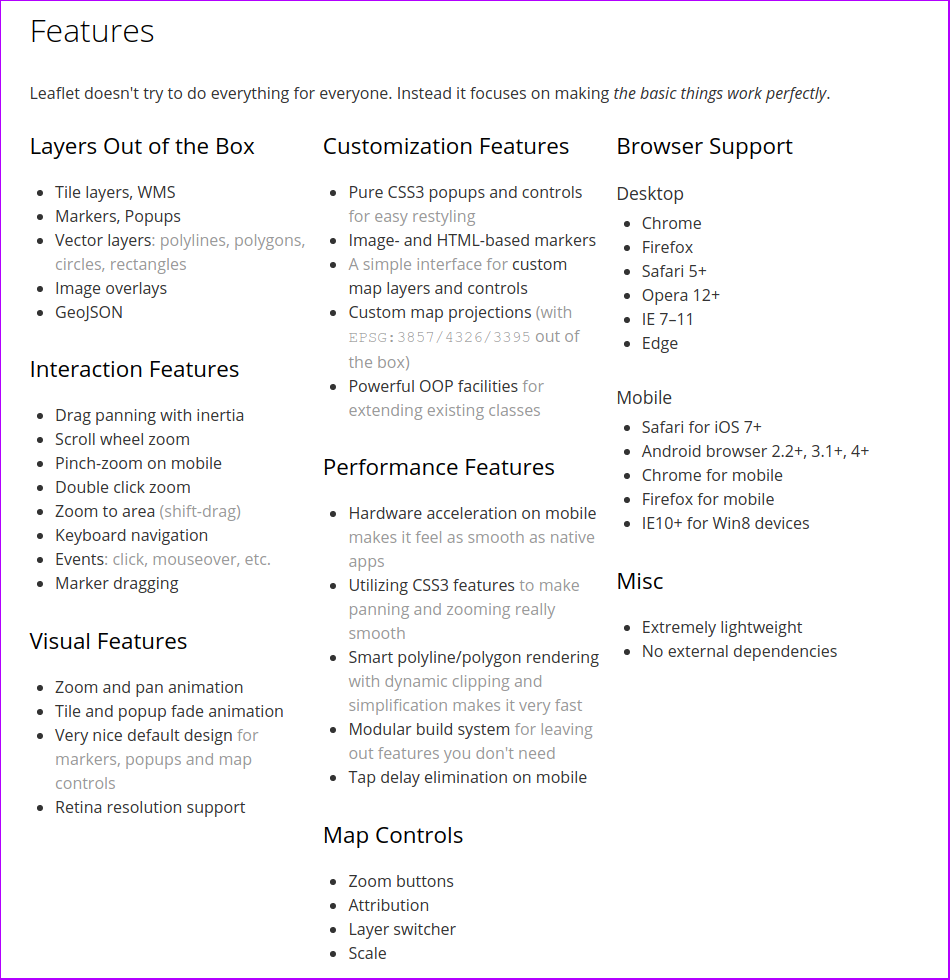
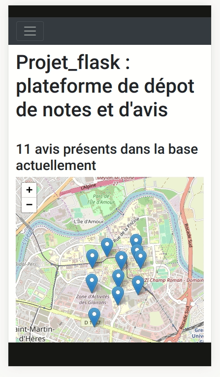

Interactions serveur/client (suite)
Le but de ce TP est de continuer notre plateforme interactive de dépôt d'avis en lui ajoutant plusieurs fonctionnalités :
- les avis vont désormais avoir des coordonnées,
- il va ainsi être possible de les localiser sur une carte,
- et il va être possible d'utiliser la carte pour pré-remplir le formulaire.

🚀 Regarder l'exemple sur le lien suivant: https://mthh.pythonanywhere.com/ et relevez les nouvelles interactions qui ont été ajoutées (que se passe-t-il lors d'un clic sur la carte, que se passe-t-il lors du clic sur l'un des autres éléments du menu de navigation, etc. ?)
Les différentes étapes de ce TP vont vous guider afin de reproduire et de personnaliser votre page d'une manière similaire.
1. Préambule et nouveaux éléments
La BD
- Deux nouveaux champs doivent être ajoutés à notre modèle
Review. Il est ainsi définit par le code Python suivant :
class Review(db.Model):
id_review = db.Column(db.Integer, primary_key=True)
rate = db.Column(db.Integer, nullable=False)
comment = db.Column(db.String(255))
name = db.Column(db.String(), nullable=False)
latitude = db.Column(db.Float(precision=10), nullable=False) # <- New !
longitude = db.Column(db.Float(precision=10), nullable=False) # <- New !
- L'utilisation du modèle
Reviewrevient donc maintenant à mobiliser la table suivante:
| id_review | name | comment | rate | latitude | longitude |
|---|---|---|---|---|---|
| 1 | Cameran Duran | Mattis molestie a iaculis at erat pellentesque adipiscing commodo. | 5 | 45.1913376954 | 5.7700002193 |
| 2 | Nasim Erickson | Amet massa vitae tortor condimentum lacinia. | 4 | 45.1915115994 | 5.7732725143 |
| 3 | Guy Richardson | Imperdiet sed euismod nisi porta lorem mollis aliquam. | 3 | 45.1922903805 | 5.7727360725 |
| 4 | Veda Lott | Dignissim enim sit amet venenatis. Urna cursus eget nunc scelerisque. | 1 | 45.1929812805 | 5.7674560725 |
| 5 | Flavia Klein | A pellentesque sit amet porttitor eget dolor morbi. | 4 | 45.1934789176 | 5.7725615994 |
Javascript
Un langage de programmation multi-paradigme : orienté objet à prototype, impératif et fonctionnel (il partage ces deux dernières caractéristiques avec Python par exemple).
Le langage est standardisé sous le nom d'ECMAScript (c'est peut-être un terme que vous rencontrerez - notamment sous sa forme abrégée pour désigner les différentes versions du standard : ES5, ES6, etc.).
Leaflet.js - JavaScript library for mobile-friendly interactive maps
Il s'agit d'une bibliothèque permettant de créer des cartes interactives. La bibliothèque est mobile-friendly par défaut et dispose de l'ensemble des fonctionnalités requise pour créer des cartes interactives personnalisées et avec vos propres données.

Pour l'utiliser il est nécessaire d'inclure deux fichiers dans le document HTML correspondant :
- Un fichier CSS (extension
.css) contenant des règles de styles - Un fichier JavaScript (extension
.js) contenant le code source de la bibliothèque
Remarques: D'autres bibliothèques permettent de créer des cartes interactives en JavaScript, les plus connues sont OpenLayers et Mapbox GL JS.
Popper.js et Bootstrap.js
Ce sont les autres bibliothèques déjà importées dans notre page. Elles sont utiles pour obtenir le comportement responsive de la barre de navigation.
Popper.jsest une biliothèque qui se spécialise dans la création et le positionnement d'info-bulles et de petites fenêtres d'informations.Bootstrap.jsdésigne la partie JavaScript du framework Bootstrap ; elle utilise les deux biliothèques citées précédemment et c'est la raison pour la quelle on les a inclus.
Liens utiles sur le JavaScript:
- Mozilla Developpers Network - Premier pas en JavaScript : https://developer.mozilla.org/fr/docs/Learn/JavaScript/First_steps
- W3schools Javascript Tutorial : https://www.w3schools.com/js/
- Eloquent JavaScript - 3rd edition (online, PDF, E-PUB, etc.) : https://eloquentjavascript.net/
- Pour se faire la main en JavaScript il faut pratiquer... des exercices comme ceux de W3schools puis des sites comme JavaScript30 peuvent donner de bonnes occasions de pratiquer !
Liens utiles sur les fonctionnalités utilisées aujourd'hui:
- Élément HTML
<input>et ses attributs : https://developer.mozilla.org/fr/docs/Web/HTML/Element/input- Élément HTML
<a>et ses attributs : https://developer.mozilla.org/fr/docs/Web/HTML/Element/a- Élément HTML
<fieldset>: https://developer.mozilla.org/fr/docs/Web/HTML/Element/Fieldset- Documentation officielle de
Leaflet: https://leafletjs.com/reference-1.7.1.html- Liste de plugins et de ressources pour
Leaflet: https://leafletjs.com/plugins.html
2. Découverte des nouveaux morceaux de code
🚀 Récupérez les fichiers nécessaires à l'exercice d'aujourd'hui : TP7 et ajoutez les en remplacement des fichier de l'exercice précédent dans votre espace PythonAnywhere. Il s'agit de :
-
la base de données SQLite (fichier
app.db), dont la tableReviewa été mise à jour pour contenir les colonneslatitudeetlongitude. -
le fichier
template/index.htmlqui a été modifié pour ajouter une carte interactive (créée avec la bibliothèque Leaflet) - il n'est pas nécessaire de modifier le fichierheader.html -
le ficher
flask_app.pymodifié de manière à inclure le nouveau modèleReviewprésenté plus haut.
🚀 Prenez connaissance des éléments nouveaux, notamment ceux qui ont été ajoutés au fichier index.html:
-
un élément HTML
<div>a été ajouté avec l'identifiantmymap -
un quatrième fichier JavaScript a été importé (balises
<script>) : il s'agit de la bibliothèqueLeaflet -
du code JavaScript a été saisi (également entre les balises
<script>) : c'est avec ces quelques lignes de codes que nous utilisons la bibliothèqueLeafletpour instancier un objetL.map(en lui indiquant l'identifiant du conteneur à utiliser pour la carte :mymap) et pour ajouter une première couche d'informations (une couche tuilée avec l'objetL.tileLayer). Ce code vous sera expliqué plus en détail oralement.
🚀 Permettre l'envoi des coordonnées dans le formulaire et réparer l'insertion dans la BD
Documentation utile:
-
Ajoutez 2 éléments
<input>à notre formulaire. Choisissez le bon type d'élément (attributtype). Ils vont seulement servir à contenir les valeurs des coordonées du point cliqué mais ne seront pas éditables, vous utiliserez l'attributreadonlysur ces deux éléments HTML (avec l'utilisation de cet attribut ils seront bien envoyés avec le reste du formulaire sans pour autant être éditables par l'utilisateur). Vous devez donner un identifiant unique (attributid) à chacun. Vous utiliserez également l'attributstepavec la valeurany(ceci à pour effet de désactiver la validation du champ basée sur l'intervalle autorisé entre les valeurs acceptées). -
Modifiez le code de la fonction Python
root: lorsqu'un formulaire est reçu (méthode POST), vous devez désormais aussi lire les champslatitudeetlongitudeet utiliser leurs valeurs pour créer l'entrée qui va être ajoutée à la base de données. Cette étape est importante car les champslatitudeetlongitudeont été créés avec le paramètrenullable=Falsedans le modèleReview. -
Modifiez le contenu du fichier
index.htmlpour inclure le code JavaScript qui suit. Vous devrez l'inclure immédiatement à la suite du code JavaScript existant, au sein de la même balise<script> </script>. Attention, vous devrez peut-être le modifier pour utilisez les identifiants des deux éléments<input>que vous venez de créer.
// Ici on définit une fonction Javascript dont le contenu sera exécuté
// lors d'un clic sur la carte...
// Le 'e' correspond au nom de variable de l'argument de la fonction onMapClick
// Lorsque la fonction s'exécute (après un clic sur la carte donc)
// cette variable contient un objet de type
// [mouseevent](https://leafletjs.com/reference-1.7.1.html#mouseevent)
function onMapClick(e) {
console.log("You clicked the map at " + e.latlng);
document.getElementById("inputLong").value = e.latlng.lng;
document.getElementById("inputLat").value = e.latlng.lat;
}
// On associe la fonction créée au dessus à l'évenement "click"
// de l'objet mymap (notre carte interactive leaflet)
mymap.on('click', onMapClick);
-
Rechargez la web app et testez que tout fonctionne correctement avant de passer à la suite:
- Lors d'un clic sur la carte, les deux éléments
<input>doivent se remplir. Leur valeur ne doit pas être modifiable. - Lorsque vous envoyez le formulaire, la page doit se recharger correctement et lister le nouvel avis.
- Lors d'un clic sur la carte, les deux éléments
🚀 Donner vie aux liens À propos et Contact de la barre de navigation
Documentation utile:
-
Inspirez-vous de la page http://mthh.pythonanywhere.com/about pour ajouter une page de ce type à votre site Web. Celà nécessite de créer un nouveau template et une nouvelle route dans l'application Python
flask_app.py. -
L'utilisateur doit pouvoir se rendre sur cette page en cliquant sur
À propos. Il doit pouvoir revenir sur la page d'accueil en cliquant surAccueil. -
Le lien
Contactdoit également être modifié afin d'y associer une adresse email. -
Rechargez la web app et testez que tout fonctionne correctement avant de passer à la suite.
🚀 Afficher des markers et des info-bulles correspondant à la localisation des avis
Documentation utile:
-
Regardez le morceau de code présent en bas de la page https://leafletjs.com/ : les 3 dernières lignes montrent la création d'un marker et de l'info-bulle qui lui est associée, avec la bibliothèque Leaflet.
-
Modifier le code du fichier
index.htmlafin de créer un marker pour chaque avis. Vous allez utiliser la même fonctionnalité deJinja2que celle qui nous permet de parcourir l'ensemble des avis (actuellement pour les afficher sous forme d'une liste HTML) afin de mobiliser le code vu dans le point précédent. -
Rechargez la web app et testez que tout fonctionne correctement avant de passer à la suite :
- Lorsque vous envoyez le formulaire, la page doit se recharger correctement et le nouvel avis doit apparaître sur la carte.
- Lorsque vous cliquez sur un marker, la note et le commentaire doivent s'afficher dans une info-bulle.
🚀 Aller plus loin dans la prise en compte de l'utilisateur... (1)
Documentation utile:
-
Le formulaire pourrait être désactivé par défaut avant que l'utilisateur ne clique une première fois sur la carte... Quel attribut devez vous utilisez pour ça ? (n'hésitez pas à chercher sur le Web, à grouper tous vos champs dans un élément HTML
<fieldset>si nécessaire, etc. !) -
Une fois les champs désactivés...il est nécessaire de les activer lors du clic de l'utilisateur. L'idée générale est la suivante :
- ce comportement devra être défini dans la fonction
onMapClickdans le code Javascript, puisqu'elle est appellée lors d'un clic sur la carte - il vous faut récupérer l'élément HTML qui a été désactivé (avec
document.getElementById('...')) et changer la valeur de l'attribut approprié. (inspirez-vous du code JavaScript existant)
- ce comportement devra être défini dans la fonction
🚀 Personnaliser le rendu...
-
Utiliser des règles CSS (cf. TP2 et TP3) pour personnaliser l'apparence de votre site Web selon vos goûts (type de police différent pour une partie du document, couleurs des différents éléments, etc.).
-
Quelques idées...
- "habiller" le formulaire autrement,
- changer/ajuster l'emplacement des éléments dans la page (veillez à conserver une disposition agréable des éléments, aussi bien sur un grand écran que sur un écran type smartphone),
- des polices utilisables gratuitement sont disponibles sur https://fonts.google.com/ (des instructions sont fournis sur la démarche à suivre pour inclure puis utiliser ces polices),
- pensez également à regarder la documentation de Bootstrap si besoin (couleur de la barre de navigation, etc.).
🚀 Aller plus loin dans la prise en compte de l'utilisateur... (2)
Documentation utile:
Plusieurs éléments peuvent encore être améliorés dans la mise en forme et dans le comportement de votre site :
- Vos pages ont-elles toutes un titre ? Remédiez-y si ce n'est pas le cas !
- L'état de la barre de navigation : lorsque vous êtes sur la page
À propos, est-ce bien ce lien là qui est définit comme étant "actif" ? (vérifiez le comportement par rapport à la page http://mthh.pythonanywhere.com/about si nécessaire) - Que se passe-t-il lorsqu'un utilisateur est sur la version mobile de votre page et qu'il clique sur la carte ? Est-il possible de descendre automatiquement jusqu'au formulaire afin que l'utilisateur voit qu'il a été activé ? (plusieurs options sont possibles)
- Peut-on changer le type de marker utilisés par Leaflet afin de personnaliser la page ? Comment pourrait-on afficher un marker différent en fonction du la note ?

Essayez de résoudre ces problèmes : regardez les liens proposés ci-dessus et/ou utilisez un moteur de recherche pour décrire ce que vous souhaitez atteindre afin d'évaluer les options qui s'offrent à vous. Faites des propositions à l'oral si vous n'êtes pas sûr ou si vous voulez de l'aide pour l'implémentation.